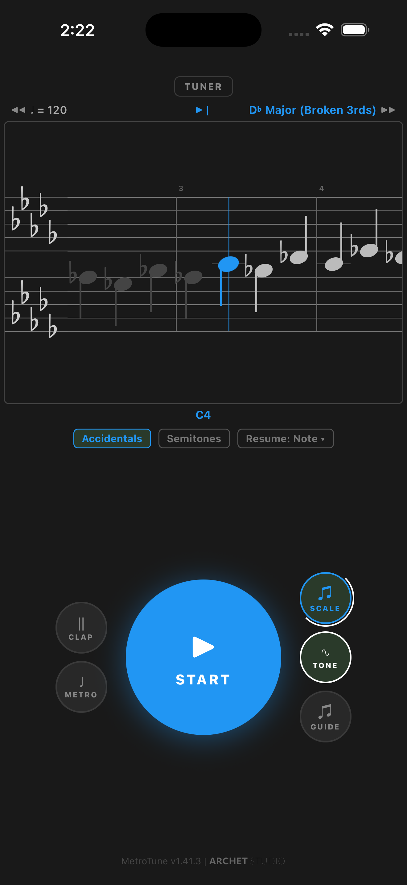
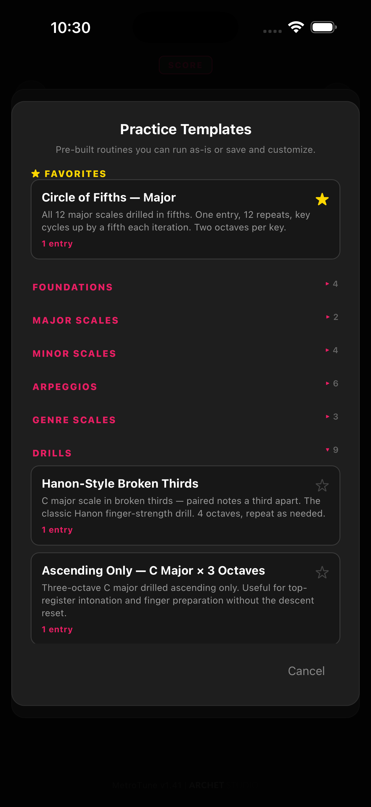
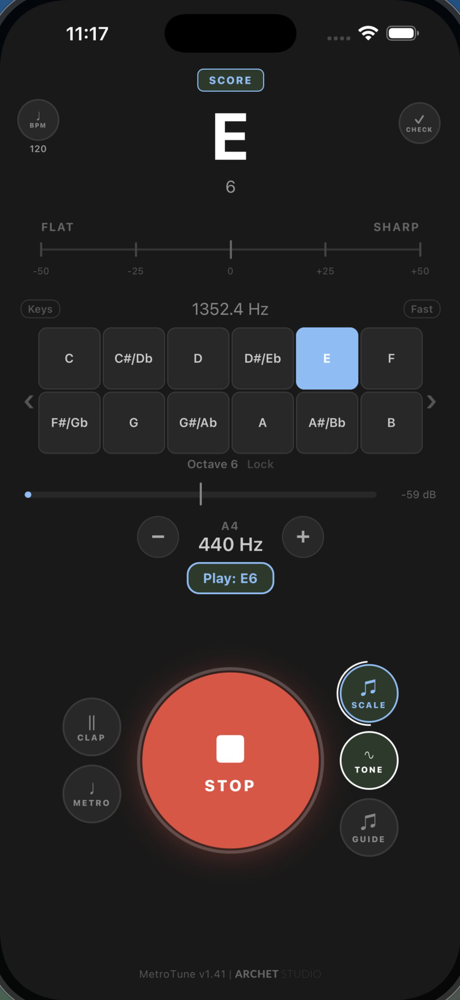
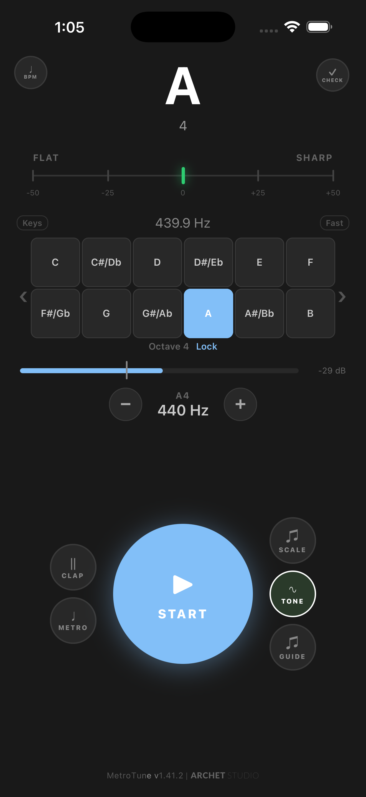
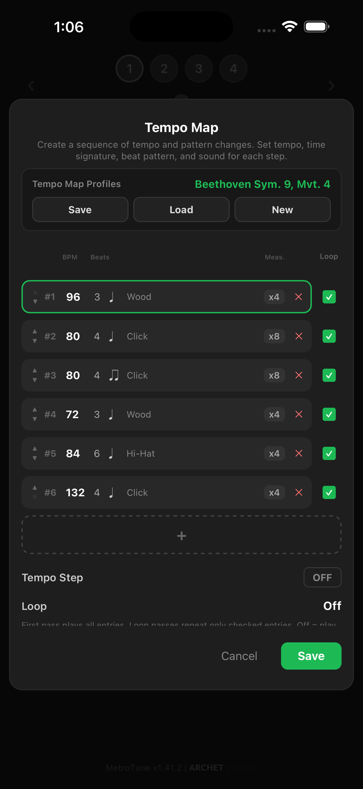
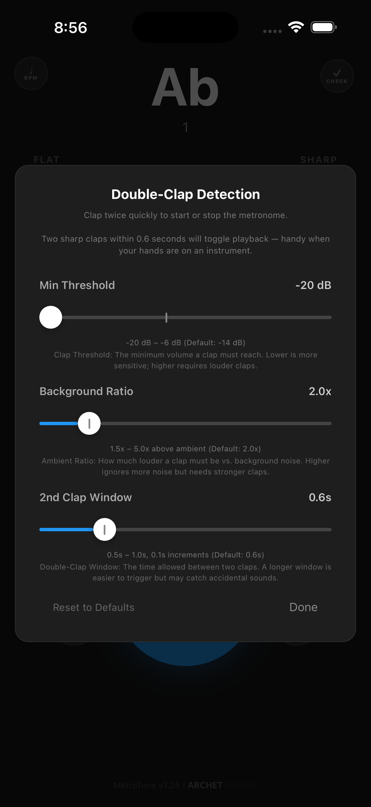

Metronome
- •Compound meters: 6/8, 7/8, 5/8, 9/8, 12/8 and more
- •Tap to accent beats, tap to mute subdivisions
- •29 sound options, voice counting, tap tempo
- •Tempo Map: per-measure tempo, meter, sound
- •Gap Click training for internal timing
A Day With MetroTune
Ten steps through a real practice session. No setup. No account. No permissions wall.
No setup, no account, no permissions wall. Tap START and a click plays at 120 BPM in 4/4. Everything else is one tap away from this screen.
Pick a subdivision shape — quarters, duplets, triplets, sixteenths — then tap any beat to accent it and tap any subdivision dot to mute it. Shape a groove no preset ships with, in seconds.
Switch to Score View and the staff appears: clefs, key signature, ledger lines, accidentals, rests — the closest thing to opening a method book inside the app. Notes light up as the metronome plays them.

Add scales to the queue in any key. Set count-in beats, loop count, gap between scales. Save the queue as a profile and reload it tomorrow.
Six categories: Foundations, Major Scales, Minor Scales, Arpeggios, Genre Scales, Drills. Tap any template to load it as a starting point, then customize.


Echo Mode plays a note, then listens. Match it within tolerance and the next note plays. Miss it and the app re-prompts with the attempt counter. Real ear training, no extra app.
Five sound profiles — Tone, Clarinet, Organ, Brass, Bell — each with the right overtone series for that family. Lock the octave and the reference pitch stays where you set it, even when your playing drifts to a different register.


Multi-entry sequencer with per-step tempo, meter, beat pattern, sound, accents, and measures. The 4th movement of Beethoven’s 9th ships as a seed profile — six entries across shifting BPMs and meters — so you can see how a real piece lays out before building your own.
Six base themes plus six pastel variants. Long-press the play button to swap. Pick the language that fits your daily life.

The microphone listens for two sharp claps in quick succession and toggles playback. Use it when your hands are full — bow, sticks, keys.
MetroTune is a metronome, a chromatic tuner, and a scale trainer that share the same engine, sounds, themes, and settings.
Score View renders a real staff with clefs, key signatures, ledger lines, and accidentals — so practice feels like reading music, not configuring an app.
Echo Mode turns the tuner into a call-and-response ear trainer. No separate app, no separate subscription.
Tap any subdivision dot to mute it. Build patterns presets don’t cover. No other metronome app lets you shape rhythm at this resolution.
Beethoven’s 9th, Mvt. 4 ships as a seed profile — six entries with shifting BPMs and meters — so new users see what a real tempo map looks like.
No subscriptions. No paywalls on core features. Watch one short rewarded ad to unlock all premium features for 24 hours — or don’t, and the metronome, tuner, and scale trainer still work exactly as shown above.
We’re actively building. If you have a feature idea, improvement, or something you wish your metronome could do, we’d love to hear it.
Available on iOS and Android. Free to download.
MetroTune v1.41 · Updated April 2026